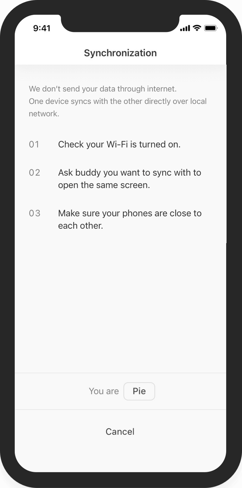
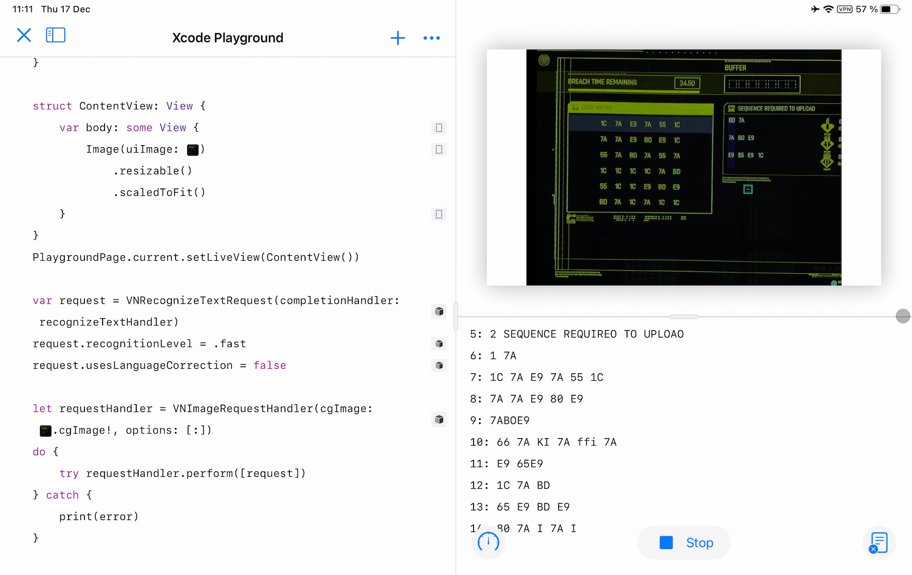
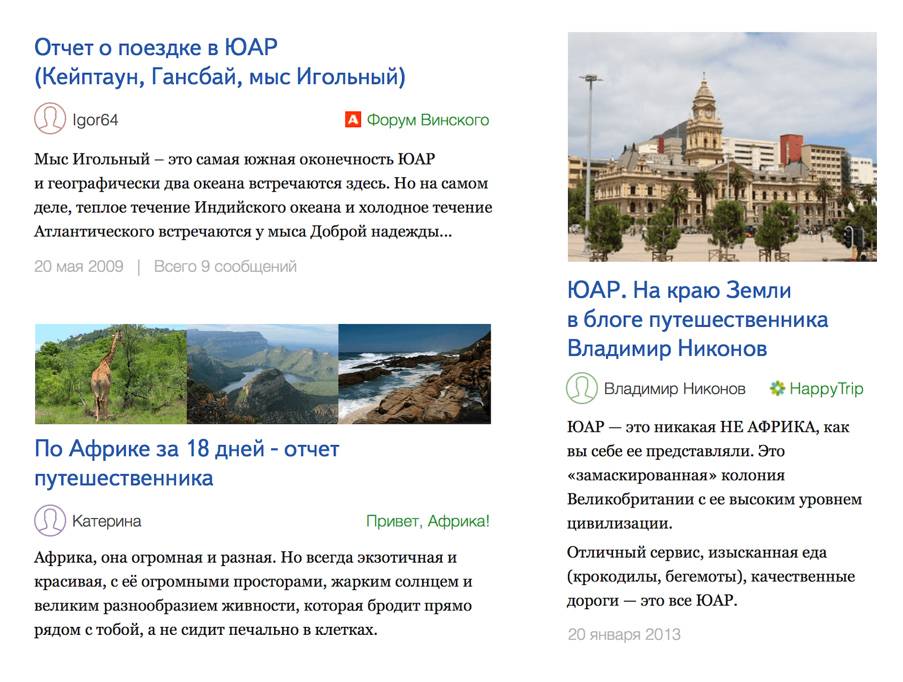

My name is Anton Vronskii.
I am an engineer with extensive product management experience.
Traditional résumé (pdf, LinkedIn) doesn't do the best job to represent who I am, what I can and what I like to do the most. The collection of my favorite fun little projects below augments the résumé to mitigate that.
Hi
Offline sync
In our little money tracking iOS app I wanted to explore the possibility of tracking spendings together with a partner but without sending your data to any servers. The approach I pursued is a peer-to-peer sync over bluetooth. It was interesting to see how it works from technical perspective (both networking and sync logic), how to explain the workflow to a user and how the approach enables regular family discussions on financial topics.
-



Hacking hacking in Cyberpunk
Cyberpunk 2077 brought memorable experiences and hacking puzzles were one of them. First 10 times. Then it became a burden which I decided to automate using computer vision and great computational power of modern mobile devices. "Point camera and get a solution in a second" approach allowed me to explore how to work with computer vision and solution presentation. And I couldn't miss an opportunity to hack hacking in Cyberpunk!
-

Search results on a map
While being a part of Maps team at Yandex I was lucky to work on a complex task of presenting search results while bringing more details without cluttering the map and making behavior of this dynamic environment (people interact with a map in multiple ways) predictable. Open Yandex.Maps app and try it for yourself! (hint: Moscow is a nice place with a lot of cafes).
Exploring horizons for Yandex Search
At Yandex I was lucky to be a part of the "special force" group responsible for conducting quick bold experiments with Yandex Search app to bring valuable insights to the team working on the core application. To ensure stability of the app with millions of users, minimize risks of negative impact and speed up experimentation we created a separate version of the app based on the mix of web and native technologies.
-


Push url to a phone
Long time ago (in 2012) it was tedious to ask your phone to open a link from a computer. There was no AirDrop, no convenient messengers, no real-time text editors only obsessive QR-code generation. Being a fan of Alfred.app I created a 3-part solution for this problem: Alfred extension to send a link from a mac, python server to receive requests and send push notifications and an iOS client that receives push notification and opens a link in one tap. It was a fun technical étude to explore how three different applications can communicate to enable a simple two-step workflow: paste link in Alfred and tap on a push notification on a phone.
Skills
I shipped production software written in Swift, Python, Obj C and ANSI C. And I have hands-on experience with Javascript and C++.
Among others I used paper (physical), Sketch, Keynote, Framer to create prototypes of different levels of fidelity.
My Arduino experience is limited but it was fun building:
- Blinking diodes
- Test environment for distance measurement
- Weather monitor
I can build a clothespin in Shapr3D.
Why? Because it was a great way to get insights into how a simple daily object is designed and because I am fascinated with a workflow Pencil and Shapr3D enable on an iPad: